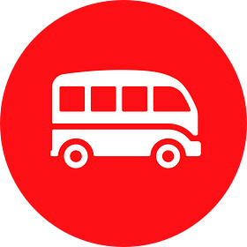
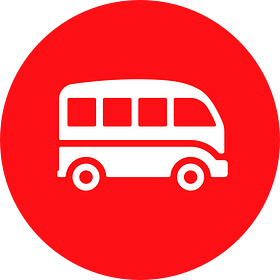

From Bootstrapping to Building a Brand that Scales
All the lessons we learnt along the way.
 

Author Name
Published inLeWagon
Back in 2013, Sébastien, my brother Romain and I decided to launch a coding school to teach creative and entrepreneurially-minded people how to code their own tech products through intensive 9-week bootcamp. At that time, none of us had real design or branding skills. My brother was a lawyer. Sébastien and I were both engineers (French engineers, aka the worst kind in terms of design background 😬).
We only knew one thing: we wanted to build a program to teach people the technical skills and tools to bring their ideas to life. This program would go far beyond “becoming a full-stack developer” or “learning UX/UI Design, HTML, CSS, ruby and Javascript”. For us, these skills were also a prerequisite for anyone who wanted to develop tech projects autonomously in their current job, start a freelancing career or launch their own startup. And we felt that traditional degrees’ courses were failing to provide students with these new tech skills. As we say in French…
🇫🇷 L’éducation supérieure a “un wagon de retard”…
An idiom that could be literally translated into: “Higher education has missed the train”. This was the first time we thought of the word “wagon” for our brand name. After giving it some more thought, it seemed like a cool name for different reasons:
- It points to this idea of a “missing block” or “missing wagon” in the “train of higher education”.
- A wagon is a vehicle that takes a group of people (like a class of students) on a journey to a destination. This is exactly what our coding bootcamp is about!
- We didn’t want a brand name using words like “hack”, “code”, “tech”, “app”, etc… For us, code is a means to develop products and reach your goals, not an end in itself.
So, Le Wagon it was! Vive Le Wagon!
Shipping our first logos 🙈
After a few drawings on a sheet of paper with a designer friend Julien, we quickly realized that a wagon is a poor design object 😬:
- It has no beginning. No end. No movement to it.
- It makes you think about underground, work, mine, gold rush, etc… not exactly the images we had in mind for our brand!
Our first drawings of a “wagon”
So, at this point, we just thought:
Why should it be a real wagon?
Why not find ideas from other sources of inspiration and just invent our own “wagon”? After all, no one complains to Github that their Octocat isn’t a real animal (should we tell them?). We decided to explore other directions for our logo: campers and vans. For us, they encapsulated our values and the bootcamp’s ethos way more than a ‘traditional’ wagon:
- A camper is about adventure. It’s about the journey, like the tech journey our students experience with us.
- A camper is about community, like the community of talented and passionate alumni we are building.
- A camper is about freedom, the freedom we want to give our students with their new tech skills.
- Well, also, our CTO Seb is a surfer 🏄 which makes the camper a cool symbol for him personally!